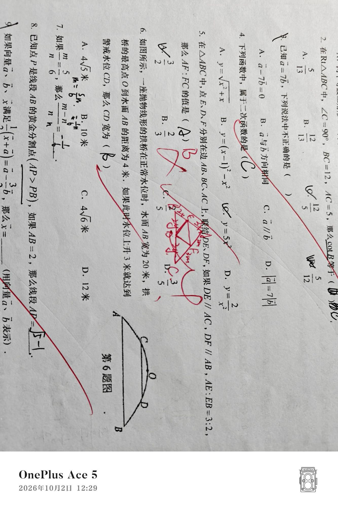

先自己读一遍，再往下看。题干里的每一句话后面都有用。
原卷照片（原件层，含批改与手写）

原件在 RAW/，已入库 Git，是这份讲解的事实依据。
把两个答案摆一起看。
一步一个动作，做完上一步再点下一步。不做完不许跳。
这一页写给数学，预计 25-35 分钟，不要一次做完。
错因判定为「审题错误」。救法是建立答案回读动作，不是重做知识点
别做的事：别让他抄完整解答。这一题的价值在思维转换，抄一遍等于没做。
关于诊断：错因「审题错误」是回看中间步骤判出来的，不是只看答案。